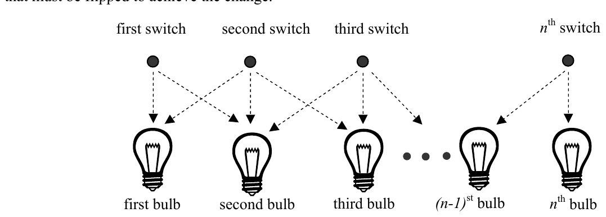

The 27th Annual ACM International Collegiate Programming Contest World Finals sponsored by IBM · Problem B
Hollywood’s newest theater, the Atheneum of Culture and Movies, has a huge computer-operated marquee composed of thousands of light bulbs. Each row of bulbs is operated by a set of switches that are electronically controlled by a computer program. Unfortunately, the electrician installed the wrong kind of switches, and tonight is the ACM’s opening night. You must write a program to make the switches perform correctly.
A row of the marquee contains n light bulbs controlled by n switches. Bulbs and switches are numbered from 1 to n, left to right. Each bulb can either be ON or OFF. Each input case will contain the initial state and the desired final state for a single row of bulbs.
The original lighting plan was to have each switch control a single bulb. However the electrician’s error caused each switch to control two or three consecutive bulbs, as shown in Figure 1. The leftmost switch (i = 1) toggles the states of the two leftmost bulbs (1 and 2); the rightmost switch (i = n) toggles the states of the two rightmost bulbs (n – 1 and n). Each remaining switch (1 < i < n) toggles the states of the three bulbs with indices i – 1, i, and i + 1. (In the special case where there is a single bulb and a single switch, the switch simply toggles the state of that bulb.) Thus, if bulb 1 is ON and bulb 2 is OFF, flipping switch 1 will turn bulb 1 OFF and bulb 2 ON. The minimum cost of changing a row of bulbs from an initial configuration to a final configuration is the minimum number of switches that must be flipped to achieve the change.

You can represent the state of a row of bulbs in binary, where 0 means the bulb is OFF and 1 means the bulb is ON. For instance, 01100 represents a row of five bulbs in which the second and third bulbs are both ON. You could transform this state into 10000 by flipping switches 1, 4, and 5, but it would be less costly to simply flip switch 2.
You must write a program that determines the switches that must be flipped to change a row of light bulbs from its initial state to its desired final state with minimal cost. Some combinations of initial and final states may not be feasible. For compactness of representation, decimal integers are used instead of binary for the bulb configurations. Thus, 01100 and 10000 are represented by the decimal integers 12 and 16.
The input file contains several test cases. Each test case consists of one line. The line contains two non-negative decimal integers, at least one of which is positive and each of which contains at most 100 digits. The first integer represents the initial state of the row of bulbs and the second integer represents the final state of the row. The binary equivalent of these integers represents the initial and final states of the bulbs, where 1 means ON and 0 means OFF.
To avoid problems with leading zeros, assume that the first bulb in either the initial or the final configuration (or both) is ON. There are no leading or trailing blanks in the input lines, no leading zeros in the two decimal integers, and the initial and final states are separated by a single blank.
The last test case is followed by a line containing two zeros.
For each test case, print a line containing the case number and a decimal integer representing a minimum-cost set of switches that need to be flipped to convert the row of bulbs from initial state to final state. In the binary equivalent of this integer, the rightmost (least significant) bit represents the nth switch, 1 indicates that a switch has been flipped, and 0 indicates that the switch has not been flipped. If there is no solution, print “impossible”. If there is more than one solution, print the one with the smallest decimal equivalent.
Print a blank line between cases. Use the output format shown in the example.
12 16 1 1 3 0 30 5 7038312 7427958190 4253404109 657546225 0 0
Case Number 1: 8 Case Number 2: 0 Case Number 3: 1 Case Number 4: 10 Case Number 5: 2805591535 Case Number 6: impossible